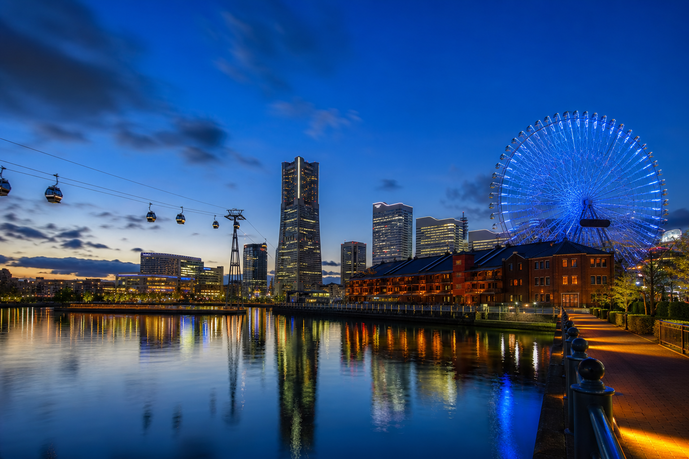

DAY 05 · 8/20 THURSDAY
白蛇神社
到橫濱港灣
上午留在品川、大井町一帶，午後由櫻木町進入港未來，空中纜車後一路步行到紅磚倉庫與摩天輪。
ROUTE
移動動線
JR＋都營淺草線
上野 → 蛇窪神社
依境內順序參拜白蛇辨財天、法密稻荷與主殿。
蛇窪神社 → 大井町
午餐後向大森海岸方向移動。
品川水族館
室內行程避開午後暑熱，出口接近京急線。
京急／JR
大森海岸 → 櫻木町
抵達後先搭 AIR CABIN 到運河公園。
運河公園 → World Porters → 紅磚倉庫
沿水岸單向步行，不折返櫻木町。
紅磚倉庫 → Cosmo World
傍晚拍磚牆，入夜拍摩天輪與水面倒影。
櫻木町／馬車道 → 上野
依結束位置選最近車站。